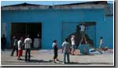
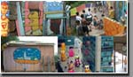
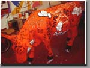

Estamos procurando patrocinadores para fazer um projeto de inclusão social com os pichadores, para pintarmos toda a rua Guaicurus e continuarmos a pintura da favela do Jaguaré/ SP.
Quem estiver interessado em ajudar favor entrar em contato na ARTBR.
Fone: 3676 0262 Cel:840 55580
E-mail: ruiamaral@artbr.com.br
A ARTBR esta realizando junto ao Senac projeto para criação de Diretores de Arte para a cidade de São Paulo, atraves da produção de Arte Publica.
Temos apoio da, Suvinil, Pinceis Tigre e Prefeitura de São Paulo.
O projeto pretende aliar teoria e prática capacitando jovens e adultos em diversas áreas, para que ele tenha autonomia em ações profissionais futuras como elaboração de painéis, produção de websites , videos para conteúdo de banda larga.
Acesse:www.artbr.com.br
Chegou, tá pronto o primeiro livro sobre o graffiti brasileiro, foi produzido pelo Instituto dr Psicologia da USP, Editado pelo Sergio Poato, tem mais de 200 paginas
com 60 artistas de varias tendências.Tem quatro paginas falando de projetos sociais de arte educação.O Livro pode ser adquirido na própria USP, na Faculdade de Psicologia.
Onde comprar:
USP: Av. Prof. Lúcio Martins Rodrigues, trav. 4, bloco 17
Cep 05508-900- São Paulo - SP(0xx11) 3091-4386 / fax: (0xx11) 3091-4475
Vaca, é um projeto de arte publica, que nasceu em Zurique na Suíça em 1998, já percorreu mais de 20 cidades do mundo, como Nova York, Londres, Chicago, Dublim, Bruxelas e em 2005 chega em São Paulo.
O projeto aqui no Brasil foi licenciado pela Tophands,todo o dinheiro será revertido para fundação Abrinq.
Uma terceira Vaca foi feita para a Nike, com pichações de descolados, como João Gordo, Jr, Marcio Garcia, DJ Patif, Joaquim Cruz.
Está no Shoping Iguatemi na frente da Tiffanis. Confira!